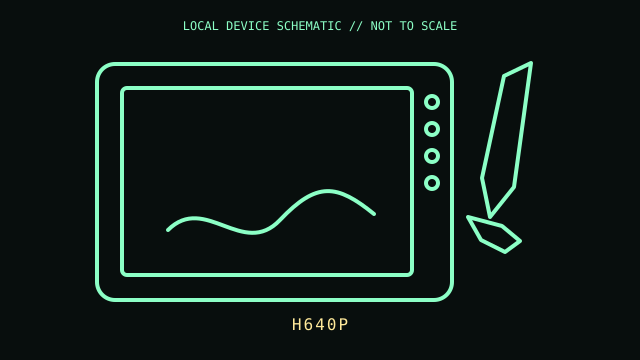

[ PEN TABLETS AND DIGITIZERS // IDENTIFIED COMPONENT ]
Huion Inspiroy H640P
Compact pen tablet with six express keys and a battery-free PW100 pen.

MODEL IDENTIFICATION: Manufacturer identity: H640P. Compare the unit label, regional suffix, and revision against the manufacturer's manual before repair or compatibility claims.
Model specifications
| Catalog subcategory | Pen tablets and digitizers |
|---|---|
| Exact model / ID | H640P |
| Model-specific features | Active area 160 × 100 mm; 8,192 pressure levels; ±60° pen tilt; six programmable express keys; micro-USB connection. |
| Interface and host support | Pen pressure and key assignments require the Huion driver; Android and other host support depend on the connection adapter, orientation, and current driver/firmware. |
| Revision / driver caveat | Confirm H640P on the rear label; do not conflate it with H640P V2 or similarly named Inspiroy models. Included pen and bundled adapters vary by package. |
Preservation and service notes
The PW100 pen is battery-free. Use a sound micro-USB data cable and avoid lateral force at the socket; clean the tablet surface dry and protect the pen nib.
Record the as-found label, accessories, host OS, driver/firmware version, and test method. Separate observed condition from published specifications; do not treat family-level feature claims as proof of a unit's revision.
Primary manufacturer documentation
- Huion H640P product pageManufacturer product specifications for area, pressure, keys, pen, and interface.
- Huion H640P support/downloadsManufacturer driver/manual portal; select H640P and verify the exact generation.
Manufacturer pages may change or retire. Preserve a copy of the applicable manual and note its revision when documenting a physical unit.